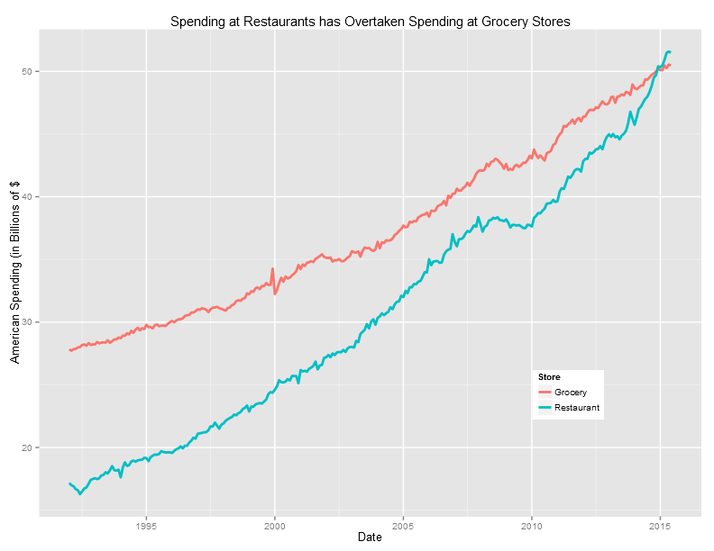
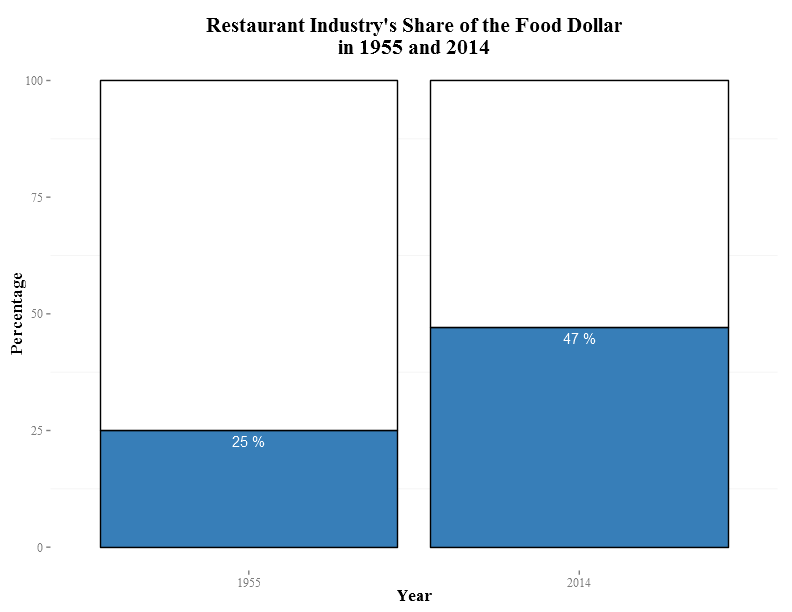
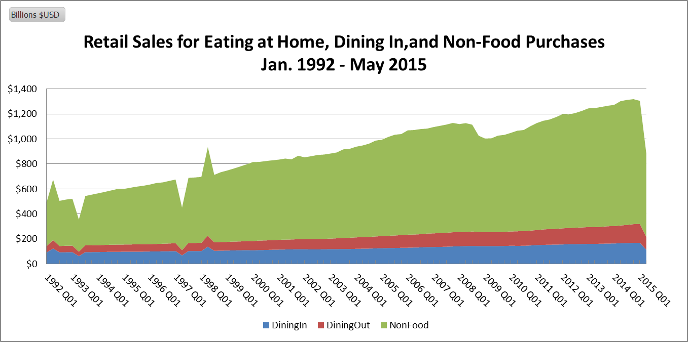
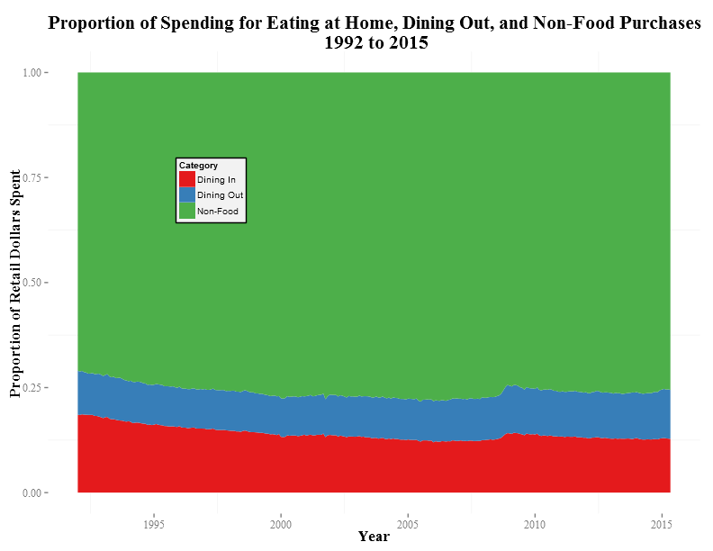
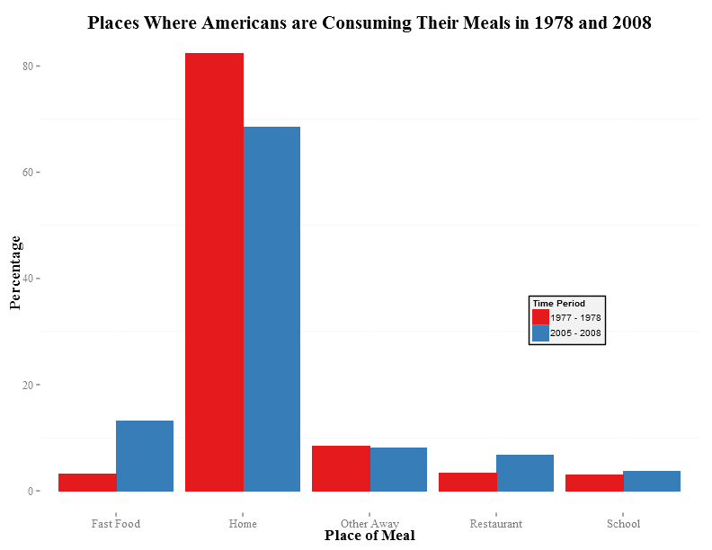
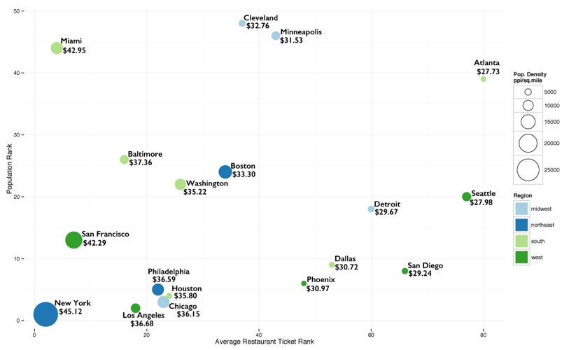
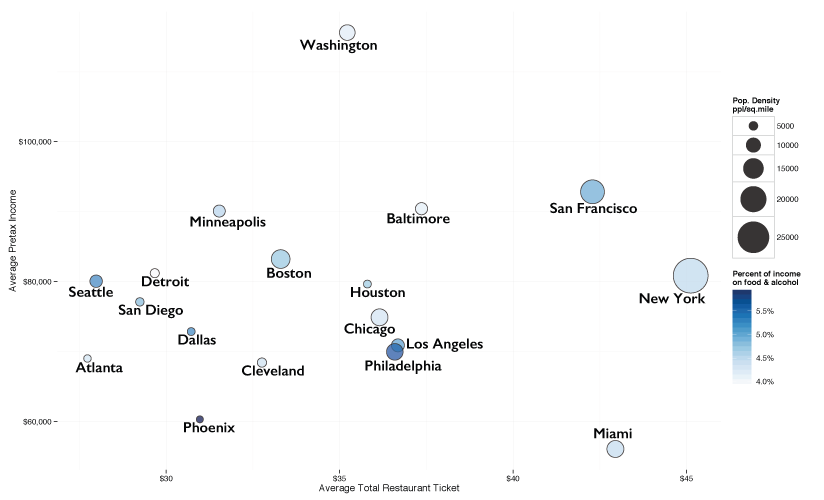

The Cost of Dining Out
Data Visualization
- To start the presentation, click the right arrow in the lower right corner.
- To view the overall presentation framework, press ESC.
- Press the Play button to begin autoplay.
A Historical Perspective on American Food Spending
We gathered various aggregate data about how Americans have spent their food dollars from 1955 to present.
Click the down arrow in the lower right corner to continue.
Restaurant Expenditures are on the Rise
Nationally, Americans started spending more at restaurants than in grocery stores just this year.
Restaurants now occupy a much greater share of the food expenditures budget
Since 1955, the percentage of food dollars Americans spend in restaurants has nearly doubled.
Spending on eating at home and in restaurants is nearly recession proof
A downturn in the economy in 2009 had very little effect on food spending overall.
Spending on eating at home and in restaurants is nearly recession proof
Proportional retail spending on dining out remains fairly stable for the entire time period.
Home or Away? Where Americans are consuming their meals
The number of meals at home is decreasing, while fast food and restaurant dining is more popular.
How Restaurant Costs and Food Budgets Vary Across the US
We took an in-depth look at 18 major cities and the intersection of the average cost of a restaurant ticket and various city statistics.
Click the down arrow in the lower right corner to continue.
How does population relate to the average cost of a dinner out?
Cities with higher population, and higher population density, tend to have higher average total restaurant ticket costs.
How does income relate to the average cost of a dinner out?
The relationship between income and average cost of dining out is less clear. The total percentage of income spent on food and alcohol appears to be city dependent.
Where do people's food dollars go?

People still spend most of their money on food eaten at home.
Maps
We mapped county level data about adult obesity rates and access to three sources of food: farmers' markets, fast food restaurants and full service restaurants.
Click the down arrow in the lower right corner to continue.
References
Reference1:
Reference2:
Reference3:
Reference4: